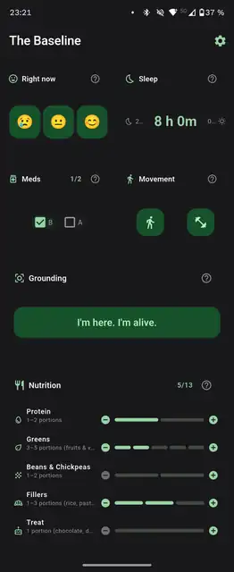
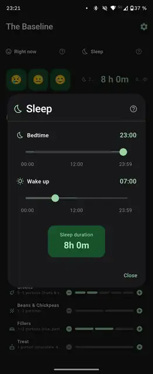

Baseline
صحة ورياضة
The Baseline is a minimal, gentle self-care app companion designed for people who struggle to maintain basic level of functioning. It aims to help with these foundations, without pressure, motivation attempts or guilt promotion. The app consists of modules that can be enabled or disabled as needed:
✓ ترخيص مفتوح (MIT) · آخر تحديث: 2026-06-21
1.0.13الإصدار
20.5 MBالحجم
MITالرخصة
Open in Kanzتحميل APK (20.5 MB)
Download APK
SHA-256: 584ddc713f342aa88720f63f299eb8e93e7581804502cad3b6bf0149a3090b7a


امسح الكود لفتح صفحة التطبيق
Scan to open this app page
لو كنز مش متثبت عندك: نزّل متجر كنز.
Not installed? Get the Kanz store.